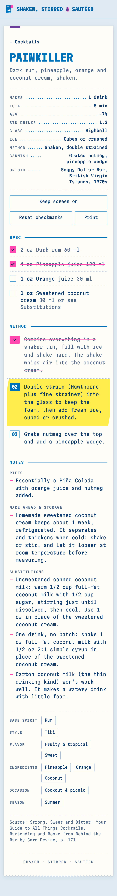
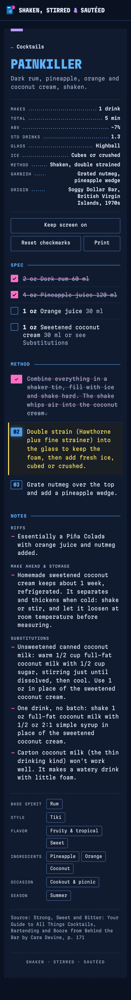
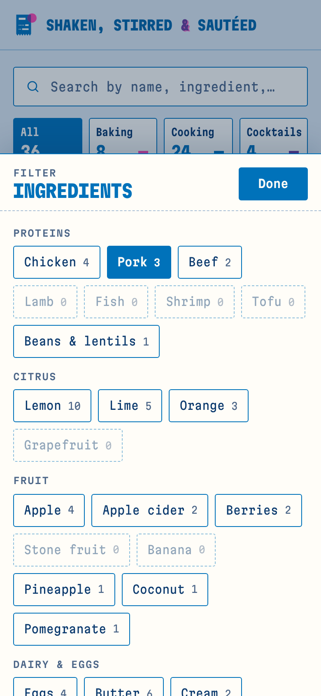

Style guide · Round two · Direction 03
Riso Ticket
Order Up’s recipe tickets, printed in two risograph inks. Blue carries every word and line. Fluoro pink marks what you have done. Where the two overlap, you get purple. Yellow is the highlighter, and nothing else.
01
Concept
A recipe you are cooking from is a ticket: a list of things to get, a numbered list of things to do, and a clear sense of where you are. Order Up got that structure right, and its mono type was easy to read. This direction keeps all of it.
What changes is the ink. Instead of black plus a red rush stamp, each ticket looks like it came off a two-drum risograph: a dense blue for reading, fluoro pink for marks you make as you cook. Two inks make three colours for the three sections. Baking is pink, cooking is blue, and cocktails are purple, the colour you get when pink lands on blue.
The rules that keep it calm
- One flat page colour: a 12% tint of the blue. No texture, grain or halftone.
- Thin 1px outlines. No heavy boxes and no hard shadows.
- One torn edge, on the bottom of each ticket only.
- Pink is never text. It fills, underlines and strikes through.
- Misregistration appears on the logo and nowhere else.
- Sentence case everywhere except titles and tiny labels.
What changed from round one, and why
- Kept from Order Up
- Ticket cards, dotted receipt leaders, numbered step boxes, the yellow highlight on the current step, done steps struck through, the 80 mm receipt print, and Martian Mono.
- Taken from Overprint
- Only the inks: riso blue, fluoro pink, their purple overlap and riso yellow.
- Left out
- The steel counter texture, the barcodes, heavy black boxes, the rail, all-caps body copy and the kitchen slang. From Overprint: grain, halftones, wobbly stickers, offset shadows and the shaking type.
- Why
- You liked Order Up’s idea and readability but found both favourites too busy. Here the character comes from two things only: the ticket shape and the ink. Everything else is quiet.
02
Logo
A blue ticket with a pink stamp. The stamp sits a little off the corner, as if the second drum slipped, and the overlap prints purple. On the ticket, the paper shows through as a title and two receipt lines.
Use it like this
- Mark plus wordmark in the header. The wordmark is Martian Mono at 75% width, weight 800, set in blue.
- The ampersand is purple with a pink shadow 1.5px off. This is the only misregistered type in the system.
- Leave clear space of half the mark’s width on every side.
- The mark alone is the favicon and the home-screen icon.
Never
- Recolour the plates or swap pink and blue.
- Move the stamp back into register. The slip is the joke.
- Add outlines, shadows or a background behind the mark.
- Misregister anything else on the site.
03
Colour
Every pair below is measured for WCAG 2.1 contrast. Body text never drops below 5.8:1. Pink fails as small text on paper (3.0:1), so it is only ever a fill, a stroke or an underline, with dark blue text on it.
Light · blue ink on white stock
| Token | Hex | Role | Contrast |
|---|---|---|---|
| --page | #DFEAF2 | Flat page tint | page ink 9.3:1 |
| --paper | #FFFDF8 | Ticket stock | n/a |
| --ink | #0B3A6E | All body text | 11.2:1 AAA |
| --ink-2 | #4C6688 | Secondary text, labels | 5.8:1 AA |
| --blue | #0072BA | Titles, outlines, numerals, leaders | 5.0:1 AA |
| --pink | #FF48B0 | Done, counts, strikes. Never text | text on it 4.7:1 AA |
| --purple | #6A3C9C | Overlap: cocktails, cues, the & | 7.5:1 AAA |
| --hi | #FFEC4D | Current step highlighter | ink on it 9.4:1 AAA |
| --rule | #A9BFD6 | Dotted rules (decorative) | 1.9:1, never sole cue |
Dark · the same inks on navy-black stock
| Token | Hex | Role | Contrast |
|---|---|---|---|
| --page | #0A1222 | Navy-black page | page ink 15.7:1 |
| --paper | #111B30 | Ticket stock | n/a |
| --ink | #E4ECF8 | All body text | 14.4:1 AAA |
| --ink-2 | #9DB0CC | Secondary text, labels | 7.8:1 AAA |
| --blue | #5DB4FF | Titles, numerals, leaders | 7.7:1 AAA |
| --on | #4A9EEA | Pressed and selected fills | text on it 6.6:1 AA |
| --pink | #FF6EC4 | Done, counts, strikes, focus | text on it 7.4:1 AAA |
| --purple | #B89CFF | Overlap: cocktails, cues, the & | 7.6:1 AAA |
| --hi-ink | #FFE45C | Current step glows in yellow | 13.0:1 AAA |
| --line | #4F78B0 | 1px control outlines | 3.8:1 non-text AA |
Two inks, three sections
04
Type, space and icons
One family, Martian Mono (SIL OFL), self-hosted as a single 38 KB variable file. Three widths do three jobs, so the page never needs a second typeface.
Lemon blueberry tart
2 oz Dark rum 60 ml. Shake hard with ice until the tin is frosted, about 12 seconds.
Total · Makes · Look for · Wait
01 02 03 · 36 · 4 hr 35 min
Spacing
- --s14
- --s28
- --s312
- --s416
- --s524
- --s632
- --s748
Radius and edges
- --r
- 3px on every control
- Step box
- 2px
- --tooth
- 10 × 5px, bottom edge only
- Outline
- 1px blue; 1.5px on checkboxes
- Lift
- soft blue shadow, light mode only
Icons
Icons are drawn with 1.5–1.75px strokes in blue. The emoji the scripts add (tabs, timers, toolbar) are hidden by the theme and replaced with words: “Wait”, “Look for”, “Time”, “Yield”.
05
Components
These are the live classes from theme.css, so they look exactly as they do on the site.
Recipe card
Ticket number top right, category flag top left, title in compressed caps, then receipt leaders. Bottom edge torn. No barcode.
Section tabs
Filter buttons and chips
Default · on (pink count, pink underline) · open (filled). Active chips can be removed in one tap.
Buttons
Category badges
Filter sheet
Ingredients
Proteins
Citrus
On a phone it rises from the bottom with a dimmed backdrop and respects the safe area. From 720px it drops down under its button as a small slip.
Ingredient checklist
Checked: a pink box with a dark tick, the line struck in pink and dimmed. Try it.
Step states
- Combine everything in a shaker tin, fill with ice and shake hard.
- Double strain into the glass, then add fresh ice.⏱ 30 seconds, until the foam settles
- Grate nutmeg over the top.✓ A thick, pale foam on top
Done · current · next. A done step gets a hairline pink strike, so a long paragraph stays quiet. The current step is the only yellow on the page. In dark mode its text glows yellow instead.
06
Voice and photography
Voice
Plain, kind and short, like a note from a friend who cooks a lot. A ticket gives instructions, so lead with the verb and say what to look for. No restaurant slang and no exclamation marks.
| Say | Not |
|---|---|
| Nothing here | 86’d / No tickets |
| Clear filters | Reset the pass |
| Look for: a thick, pale foam | Cook until done |
| Wait 30 min | Let it ride |
| Reset checkmarks | Bump all |
| Keep screen on | KEEP SCREEN ON!! |
Photography
When photos arrive, they are pasted onto the ticket, not printed in riso. Keep them in full, natural colour so food looks like food.
- Daylight from one side, overhead or a low three-quarter view.
- Plain backgrounds: white plates, pale wood, light linen. Let the page supply the blue.
- One dish, filling the frame. Crop to 16:10 on cards and 16:9 on a recipe.
- No filters, duotones, grain or overlays. No pink or yellow props fighting the inks.
- A drink is shot at glass height with its garnish showing.
07
Live previews
The real pages, the real scripts and the real recipes, wearing this theme. Check off ingredients and tap steps to see the states.



08
How to adopt
- Copy
theme.cssoverassets/style.css. - Copy
fonts/martian-mono-latin-standard-normal.woff2toassets/fonts/. The@font-facepath./fonts/then still resolves, because it is relative to the stylesheet. - Copy
logo.svgoverassets/icon.svg, and export it at 192 and 512 px (on#DFEAF2, mark centred at 70%) foricon-192.pngandicon-512.png. - In
index.htmlandrecipe.html, replace the emoji brand mark with<img class="brand-mark" src="assets/icon.svg" alt="" width="30" height="33"> - Replace the theme-color meta with two:
#DFEAF2for light and#0A1222for dark, each with itsmediaquery. Inmanifest.webmanifest, settheme_colorandbackground_colorto#DFEAF2. - Bump
CACHEinsw.jstosss-v2so phones drop the old stylesheet. It caches what it fetches, so the font works offline after the first visit. - No script changes are needed. Every selector and state that
home.jsandrecipe.jsuse is styled, and the CSP stays as it is.
Riso Ticket · round two · fonts: Martian Mono, SIL Open Font License 1.1